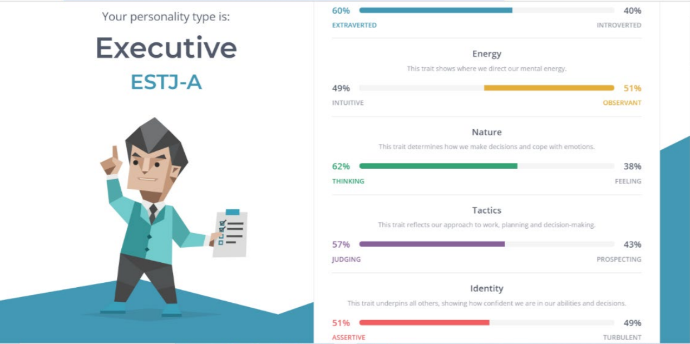
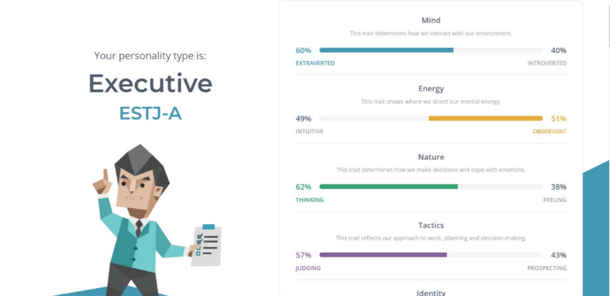
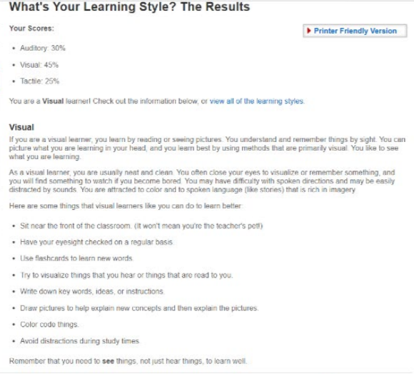
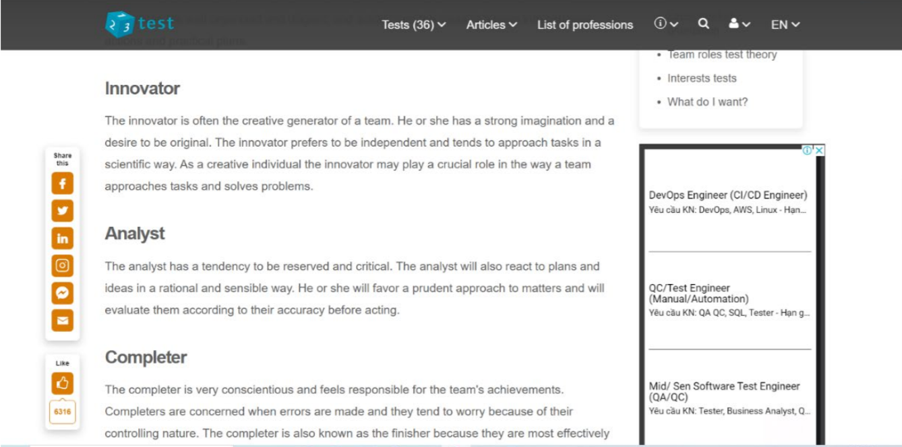
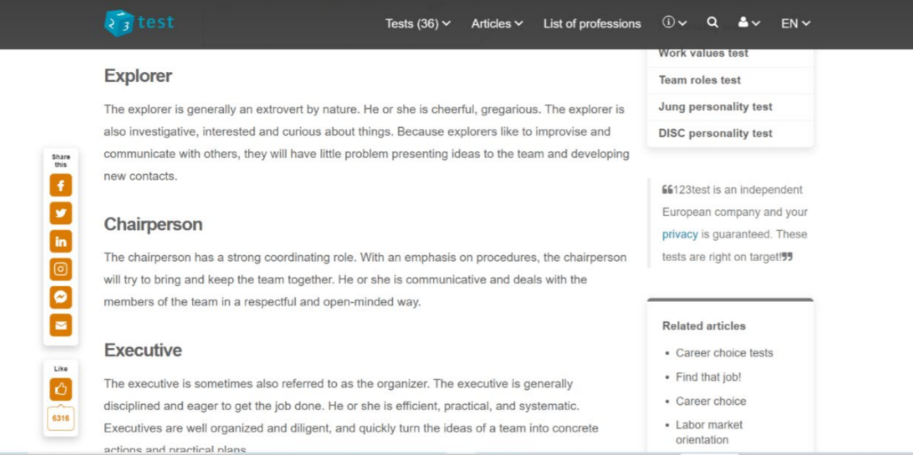
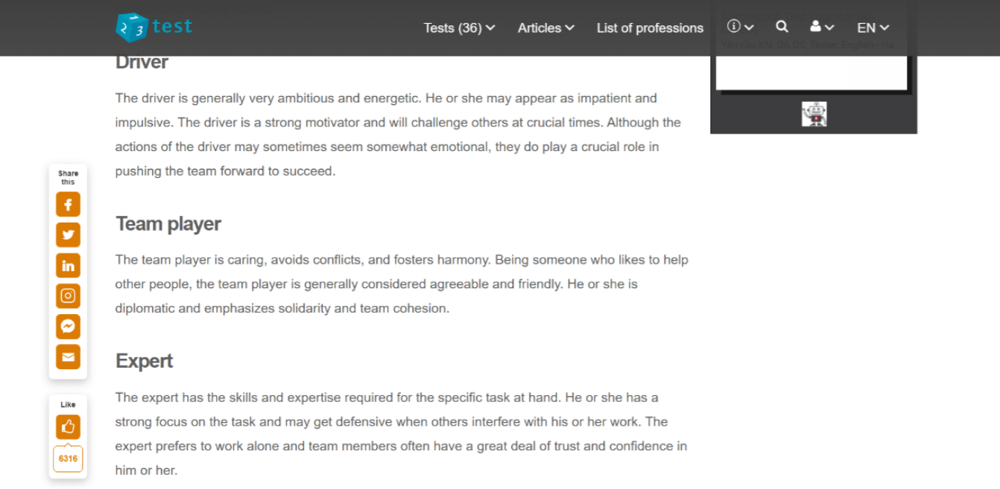

Vu Quoc Gia Quan (Secretary)
 My name is Vu Quoc Gia Quan, and I have the student ID s3927120. I am currently our team's secretary. I am an IT major, and this is my first semester at RMIT. My hobbies include creating small DIY projects, reading manga, researching random topics, and so on. I do not have much IT knowledge because this is my first time learning programming and IT.
My name is Vu Quoc Gia Quan, and I have the student ID s3927120. I am currently our team's secretary. I am an IT major, and this is my first semester at RMIT. My hobbies include creating small DIY projects, reading manga, researching random topics, and so on. I do not have much IT knowledge because this is my first time learning programming and IT.
- 
The Myers-Briggs and a personality test said I am outgoing, analytical, and quick to assess people. But I am strict and do not like unusual answers. The Learning Style test shows that I am a visual learner. Keeping this in mind will help me collaborate with others. Some of my team's ideas may be rejected because they do not meet the textbook's criteria. I need to be more open-minded, but I also need to be more selective with my consumption. Despite my flaws, I enjoy working in a team environment. I can still help others build their own ideas and answers. My ability to elevate ideas and solutions can benefit the entire team.